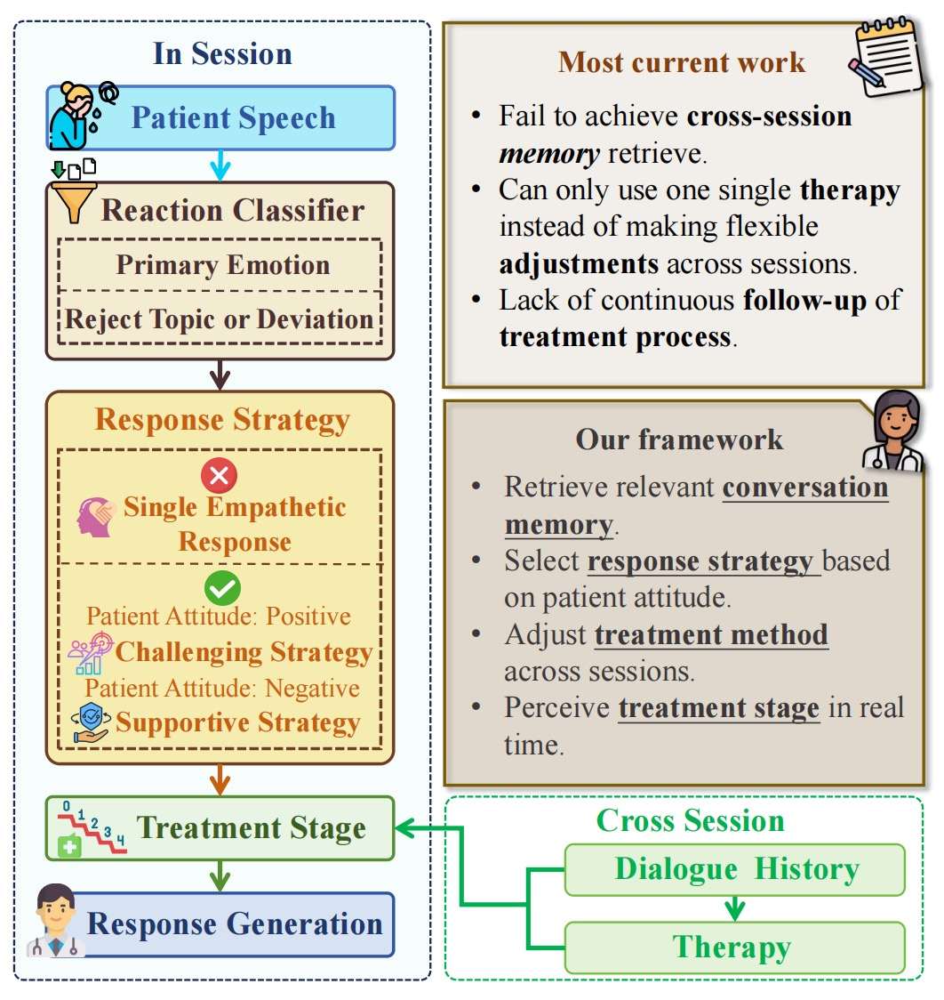
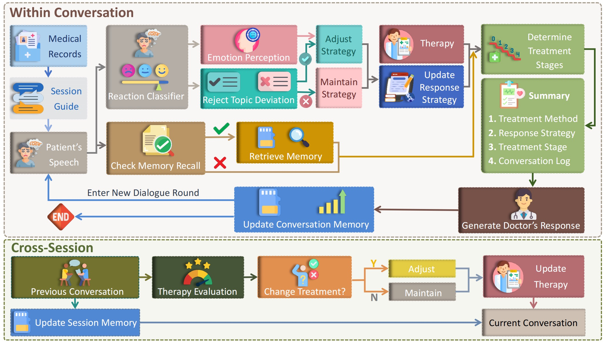
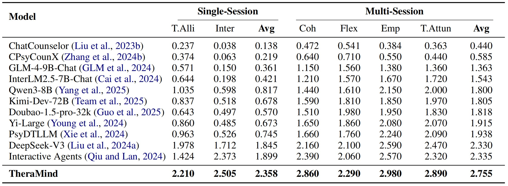
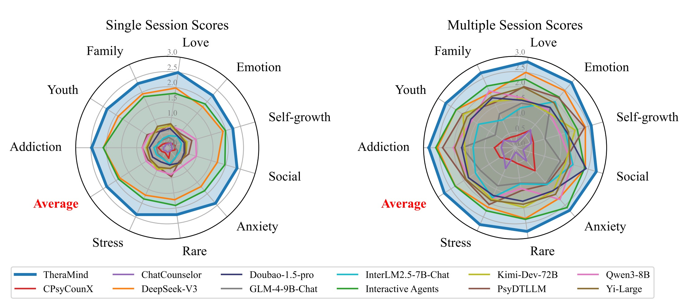
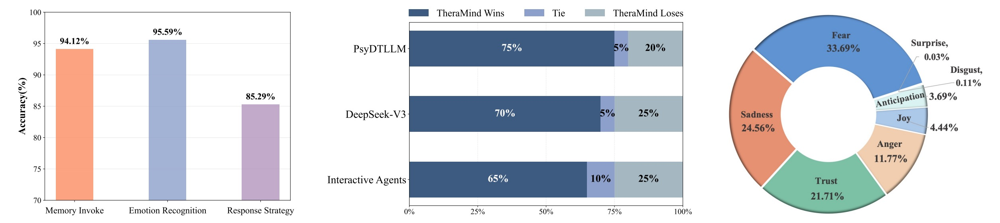
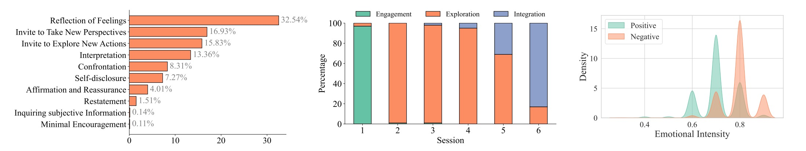
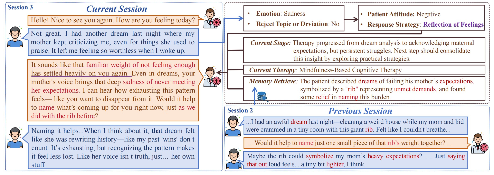

TheraMind: A Strategic and Adaptive Agent for Longitudinal Psychological Counseling
Abstract
Large language models (LLMs) in psychological counseling have attracted increasing attention. However, existing approaches often lack emotional understanding, adaptive strategies, and the use of therapeutic methods across multiple sessions with long- term memory, leaving them far from real clinical practice. To address these critical gaps, we introduce TheraMind, a strategic and adaptive agent for longitudinal psychological counseling. The cornerstone of TheraMind is a novel dual-loop architecture that decouples the complex counseling process into an Intra-Session Loop for tactical dialogue management and a Cross-Session Loop for strategic therapeutic planning. The Intra-Session Loop perceives the patient’s emotional state to dynamically select response strategies while leveraging cross-session memory to ensure continuity. Crucially, the Cross-Session Loop empowers the agent with longterm adaptability by evaluating the efficacy of the applied therapy after each session and adjusting the method for subsequent interactions. We validate our approach in a high-fidelity simulation environment grounded in real clinical cases. Extensive evaluations show that TheraMind outperforms other methods, especially on multi-session metrics like Coherence, Flexibility, and Therapeutic Attunement, validating the effectiveness of its dual-loop design in emulating strategic, adaptive, and longitudinal therapeutic behavior. The code is publicly available at https://0mwwm0.github.io/TheraMind/.

Illustration of Our TheraMind Framework.
Framework
The TheraMind framework operates on a novel dual-loop paradigm. The Intra-Session Loop (top) executes turn-by-turn dialogue management, involving patient state perception, memory retrieval, and clinically-grounded response generation. The Cross-Session Loop (bottom) performs macro-level strategic planning by evaluating therapeutic efficacy after each session and adaptively selecting the therapeutic method for the next, enabling true longitudinal and personalized counseling.
Evaluation Table
Based on the CPsyCounR dataset, our evaluation assesses counseling LLM and agents using single-session (Therapeutic Alliance, Interaction Quality) and multi-session metrics (Coherence, Flexibility, Empathy, Therapeutic Attunement). As shown in the table, TheraMind achieves state-of-the-art performance, significantly outperforming all baseline models, especially in multi-session capabilities, demonstrating superior long-term therapeutic interaction and adaptability.
Performance comparison
This radar chart visually compares counseling LLM and agents across various psychological scenarios. TheraMind demonstrates the most extensive coverage, outperforming others in nearly all categories, highlighting its superior adaptability and therapeutic effectiveness across diverse counseling contexts.
Human Evaluation
This figure demonstrates TheraMind's superior performance. Human evaluators strongly preferred TheraMind over top baselines. Also, core internal components were judged to be effective by human experts. In addition, we obtained the distribution of patient emotions recognized by TheraMind during counseling sessions.
Statistics and Analysis
As shown above, TheraMind demonstrates a balanced approach that facilitates both emotional processing and cognitive-behavioral change. It also successfully models the structured progression of a longitudinal therapeutic arc. What's more, our TheraMind demonstrates a nuanced understanding of the patient’s psychological state by linking perceived attitude to emotional expression.
Case Study
This is a case study of TheraMind’s deliberative process to show how our framework operates. The agent synthesizes the patient’s current state (emotion, attitude), the therapeutic stage, and a retrieved memory from a previous session (the “rib” metaphor) to generate a historically-informed, clinically-purposeful response.
BibTeX
@article{YourPaperKey2024,
title={Your Paper Title Here},
author={First Author and Second Author and Third Author},
journal={Conference/Journal Name},
year={2024},
url={https://your-domain.com/your-project-page}
}